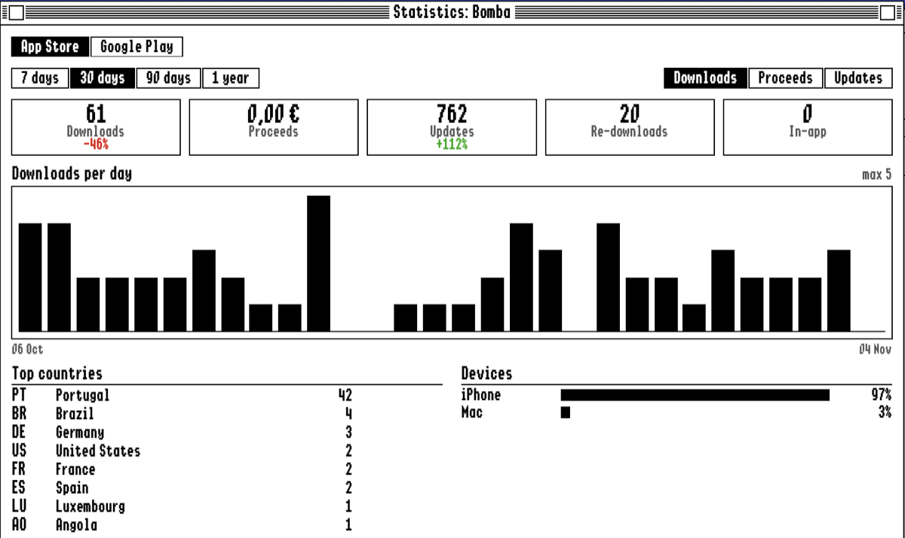
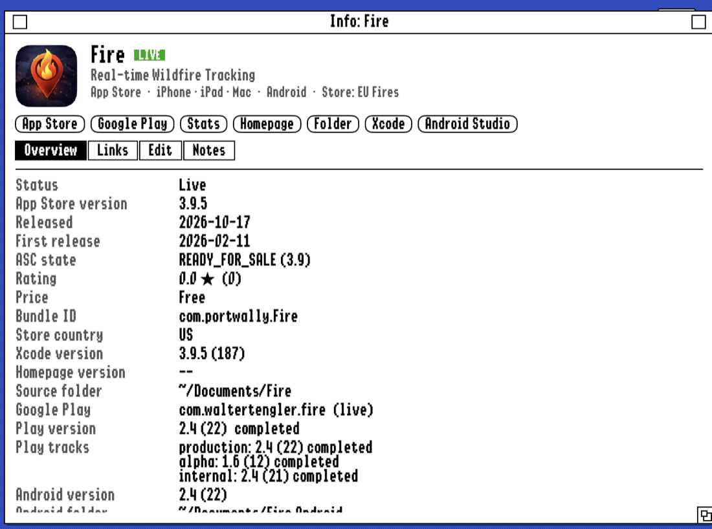

Wally's Manager
Every app you ship, in one retro desktop.
A project organizer for the Mac. It lists all your apps with their App Store and Google Play versions, review status, sales, downloads and reviews, compares them with Xcode, Android Studio, your homepage and GitHub, tells you which of them need attention, and keeps your Apple IIgs disk images one click away from booting in MAME.
macOS 15 or later App Store + Google Play Thirteen skins Not released yet

What it shows
- Every project in one list. App Store apps, Android apps, Mac apps sold elsewhere, Apple IIgs programs and plain websites, with icon, version, status, downloads of the last 7 days and the date of the last release.
- All the versions side by side. Live in the App Store and on Google Play, in Xcode and Android Studio, on your homepage, and the latest GitHub release.
- Review status. Waiting for Review, In Review, Rejected and Ready for Sale from App Store Connect; tracks, staged rollouts and halted releases from Google Play.
- One click away. App Store, Google Play, homepage, GitHub, source folder, Xcode and Android Studio, from every project.
- Set up in seconds. It reads your homepage folder, matches your App Store Connect apps by ID, bundle ID or name, and finds your Xcode and Android projects by itself.
Needs attention
The Dashboard answers one question: what should I look at today?
- ! Xcode is at 3.0, but 2.22 is live: not submitted yet?
- ! Homepage shows 4.5, current is 4.6
- · Waiting for review 1.0
- ! Android Studio is at 2.5, but Google Play has 2.4
- ! Downloads down 45% this week
- ! New ★★ review
- !! 1 disk image missing on disk
The kinds of lines the Dashboard shows. Click one and the project it is about opens.
Sales and statistics

- Downloads and proceeds. First downloads, updates, re-downloads and in-app purchases over 7, 30 or 90 days or a year, with the change against the period before and a bar chart per day or month.
- Where and on what. Top countries and the split between iPhone, iPad and Mac.
- App Analytics. Impressions, product page views, conversion, where downloads come from, sessions, active devices, crashes and deletions.
- Reviews and earnings. The latest written reviews, and what each month’s financial report says you earned, converted to your currency.
- This week. The Dashboard adds it all up: downloads and proceeds of the week, the apps that grew or dropped, and earnings of the last 12 months.
- Fetched once, kept for good. Every report is downloaded once and stays on your Mac, so the history keeps growing.
Google Play and Android
- One project, two stores. The Android version of an app lives in the same project as the iOS one, with its own Google Play button and its own tab in the statistics.
- Android Studio projects found. Package name, versionName and versionCode are read from your Gradle files; one click opens the project in Android Studio.
- Tracks and rollouts. Production, beta, alpha, internal and closed tests with their versions and status, read without touching your listing.
- Installs and health. Installs per country, updates, uninstalls, active devices, crashes, ANRs, ratings and earnings from Play Console’s reports.
- Google Play reviews are kept as they come in, and bad ones show up on the Dashboard next to the App Store’s.

GitHub, itch.io, AdMob, iPhone and the menu bar
- GitHub statistics. Views, visitors, clones, new stars and release downloads of every repo, with where visitors come from. GitHub only keeps visits for 14 days; the app adds every refresh to its own history, so the numbers keep growing.
- itch.io. Paste your itch.io API key once. Every game gets its views, downloads and purchases, with the change over the last 7 days, an itch.io tab in the Statistics window and a row in the Overview. A game that no project matches is added as a new project. itch.io only reports totals, so the app keeps its own daily history.
- AdMob earnings. Sign in once with Google (read-only) and every app gets an AdMob tab: estimated earnings, impressions, clicks, eCPM, click rate and fill rate, plus an “AdMob this week” box on the Dashboard. An app that runs on both stores is listed once per store, as “Alerta (iOS)” and “Alerta (Android)”.
- iPhone and iPad. A companion app shows your projects, the Dashboard and the statistics in the same skins, and a small or medium home-screen widget keeps the week’s numbers in sight. The Mac writes a snapshot to iCloud Drive; nothing goes through a server.
- Tiled windows. With the windows tiled, the Dashboard sits above the Info window and both share the height of the column equally.
- Menu bar. An icon with the number of projects that need attention. Click it for the attention list, apps in review and this week’s numbers. The app keeps refreshing every three hours after you close the window, and can start at login.
For the Apple IIgs
Software that never sees an App Store gets the same care.
- Disk images per project. Drop in .2mg, .po, .hdv, .dsk, .woz or .shk files. Mark one as the boot disk. A missing file is flagged, and Find… points it to where it went.
- Boot in MAME. One click starts the IIgs in MAME from your Ample install, with ROM 3, ROM 1 or ROM 0 and any extra arguments. Floppies go in the 3.5" drive, hard disk images on a CFFA2 card.
- Releases and places. The latest GitHub release, the ProDOS file type, and links to the sites where the program is published.
Where the numbers come from
- Your Mac: the homepage folder, your Xcode and Android Studio projects and your disk images. Nothing is copied or uploaded.
- Apple’s public App Store lookup for versions, dates, release notes, ratings and icons.
- App Store Connect, with your own API key: review states, sales and financial reports, App Analytics and reviews.
- Google Play, with your own service account: tracks, reviews and Play Console’s reports.
- AdMob, with your own Google sign-in (read-only): earnings, impressions and clicks per app.
- itch.io, with your own API key (read-only): views, downloads and purchases of your games.
- GitHub’s API for releases, visits, clones, stars and downloads, and the European Central Bank’s exchange rates for proceeds.
- Your keys stay in your Keychain.
No account, no tracking, no server of its own. The data lives in a file on your Mac.
Thirteen skins
The whole app is drawn by the skin you pick: windows, menus, buttons, fonts and colours. So is this page. Click one to try it.
Scale 1× to 2×, CRT scanlines, an Amiga Guru Meditation for errors, a Norton Commander layout with F-keys in DOS, and a taskbar in Windows 95.
Interested?
Wally’s Manager is not released yet. If you ship apps and would use it, one click is enough: no email, no name, no form. It only adds one to a counter, so I can see whether it is worth finishing for others.
Thanks, counted! One more tap, if you like: what would feel like a fair price?
Thank you! Both answers are only counted, nothing about you is stored.
The clicks are counted anonymously with GoatCounter, which sets no cookies and keeps no personal data. Want a beta invite when there is one? Write me, that is the only case where I need your address.